अध्याय 2: सत्ता के समकालीन केंद्र (Contemporary Centres of Power)
1.1 परिचय और वैश्विक परिदृश्य (Introduction & Global Context):
1991 में सोवियत संघ (USSR) के विघटन के बाद, शीतयुद्ध की द्विध्रुवीय व्यवस्था समाप्त हो गई। पूरा विश्व एकध्रुवीय (Unipolar) हो गया, जहाँ अमेरिका एकमात्र महाशक्ति के रूप में स्थापित हो गया। अमेरिका ने अपने सैन्य, आर्थिक और सांस्कृतिक प्रभाव के बल पर पूरे विश्व पर अपना वर्चस्व कायम किया। लेकिन इतिहास गवाह है कि सत्ता का कोई भी केंद्र स्थायी नहीं रहता। विश्व राजनीति में अमेरिकी एकध्रुवीयता को चुनौती देने और संतुलित करने के लिए कई नए क्षेत्रीय संगठन (जैसे यूरोपीय संघ, आसियान, सार्क, ब्रिक्स) और देश (जैसे चीन, भारत, जापान, दक्षिण कोरिया) उभरकर सामने आए हैं। इन्हीं शक्तियों को 'सत्ता के समकालीन केंद्र' या 'सत्ता के वैकल्पिक केंद्र' कहा जाता है।
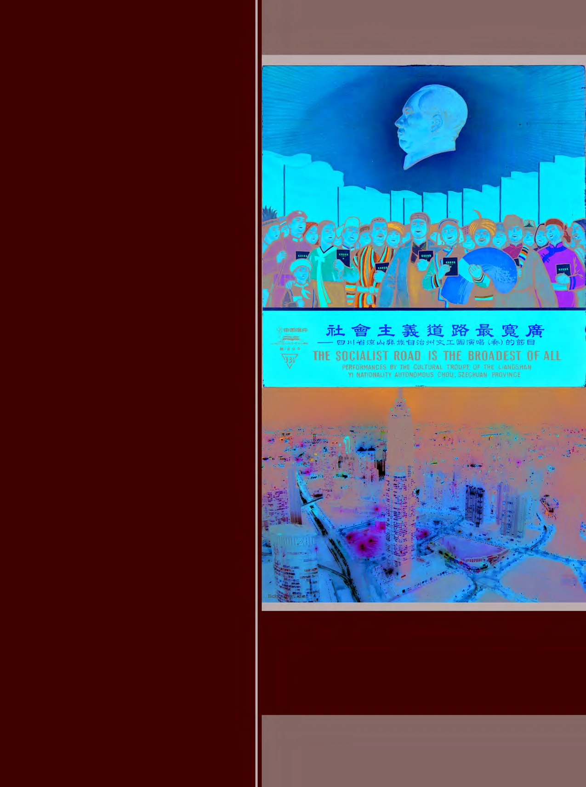
यह आरेख शीत युद्धोत्तर काल में वैश्विक रंगमंच पर उभरे विभिन्न वैकल्पिक शक्ति समूहों को दर्शाता है, जो बहुध्रुवीय व्यवस्था (Multipolarity) का आधार हैं।
गांधी जी के चित्र वाली यह डाक टिकट भारत के ऐतिहासिक कूटनीतिक सफर और वैश्विक सहयोग के संदेश का प्रतिनिधित्व करती है।
2. वैकल्पिक शक्ति केंद्रों का उदय और औचित्य
द्वितीय विश्वयुद्ध के बाद उभरे इन केंद्रों के बनने के निम्नलिखित मुख्य कारण थे:
- सामूहिक सुरक्षा और विकास: छोटे और मध्यम आकार के देशों ने महसूस किया कि व्यक्तिगत रूप से वे अमेरिका की विशाल शक्ति का सामना नहीं कर सकते, इसलिए आर्थिक और राजनीतिक एकीकरण आवश्यक है।
- क्षेत्रीय शांति: आपसी ऐतिहासिक विवादों और युद्ध की विभीषिका से बचने के लिए बातचीत का मंच तैयार करना।
- आर्थिक संप्रभुता: पश्चिमी देशों के वर्चस्व वाली वित्तीय संस्थाओं (जैसे विश्व बैंक और आईएमएफ) पर निर्भरता कम करना और क्षेत्रीय मुक्त व्यापार क्षेत्र (FTA) बनाना।
यूरोपीय संघ (European Union) - इतिहास, विकास और आर्थिक प्रभाव
यूरोपीय संघ मुख्य रूप से यूरोप महाद्वीप में स्थित है। इसमें वर्तमान में 27 सदस्य देश शामिल हैं। भौगोलिक रूप से यह अटलांटिक महासागर से लेकर पूर्वी यूरोप की सीमाओं तक फैला हुआ है।
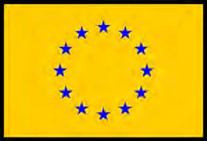
नीले रंग की पृष्ठभूमि पर सोने के रंग के 12 सितारे हैं। यह यूरोप के लोगों के बीच एकता, मेल-मिलाप और पूर्ण सद्भाव का प्रतीक है। संख्या 12 को पूर्णता और समग्रता का पारंपरिक प्रतीक माना जाता है।
1. संक्षिप्त इतिहास और द्वितीय विश्वयुद्ध के बाद वैकल्पिक केंद्र बनना
1.1 ऐतिहासिक पृष्ठभूमि:
द्वितीय विश्वयुद्ध (1939-1945) ने पूरे यूरोप को तबाह कर दिया था। यूरोपीय नेताओं ने समझा कि यदि वे अपनी अर्थव्यवस्था को फिर से खड़ा करना चाहते हैं और भविष्य में होने वाले महाविनाश से बचना चाहते हैं, तो उन्हें एकजुट होना पड़ेगा। शीत युद्ध के दौरान, अमेरिका ने 'मार्शल योजना' (Marshall Plan) के तहत यूरोप के पूंजीवादी देशों को भारी आर्थिक सहायता दी। 1948 में यूरोपीय आर्थिक सहयोग संगठन (OEEC) की स्थापना हुई, जिसने पश्चिमी यूरोप के देशों के बीच आर्थिक सहयोग शुरू कराया।
फ्रांसीसी विदेश मंत्री रॉबर्ट शुमान की ऐतिहासिक तस्वीर, जिन्होंने 1950 में शुमान घोषणा पत्र के जरिए कोयला और इस्पात उद्योग के साझा प्रबंधन की नींव रखी, जो भविष्य के यूरोपीय संघ का आधार बना।
2. यूरोपीय एकीकरण के प्रमुख चरण (Milestones)
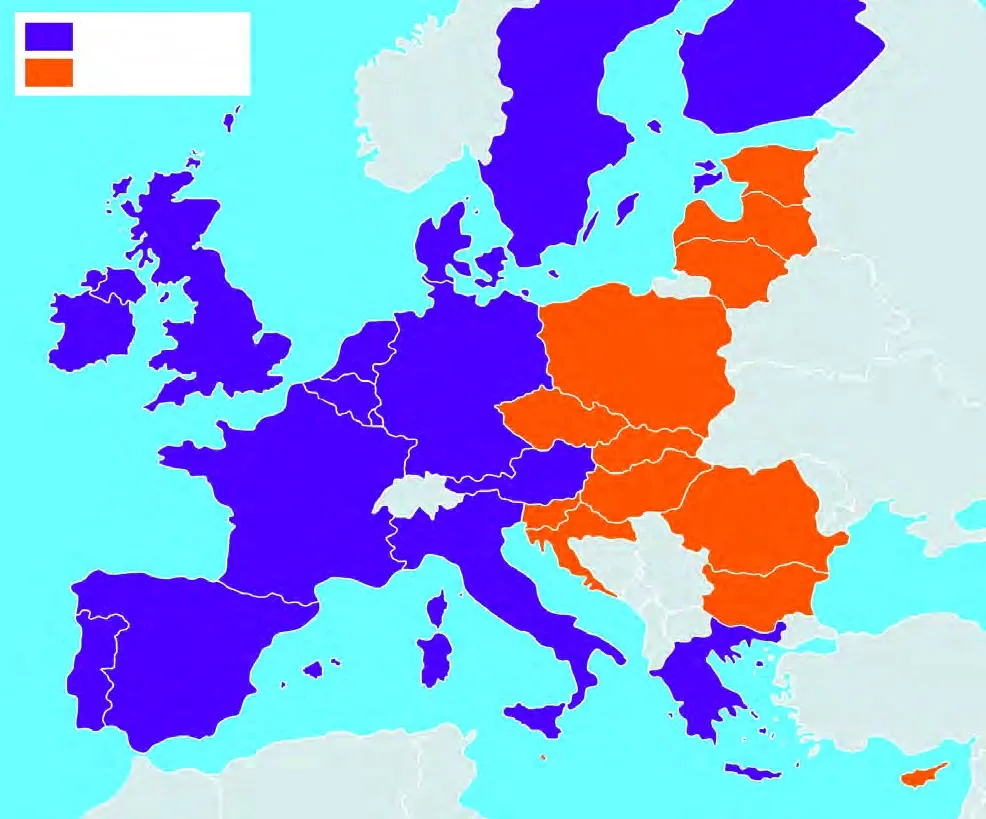
एनसीईआरटी पुस्तक का मूल चार्ट जो 1951 के कोयला एवं इस्पात समुदाय से लेकर 1992 की मास्ट्रिच संधि और यूरोपीय संघ के जन्म के विभिन्न चरणों को दर्शाता है।
- 1951: छह देशों ने मिलकर यूरोपीय कोयला और इस्पात समुदाय (ECSC) का गठन किया।
- 1957 (रोम की संधि): यूरोपीय आर्थिक समुदाय (EEC) और यूरोपीय परमाणु ऊर्जा समुदाय (Euratom) की स्थापना की गई।
- 1992 (मास्ट्रिच संधि - Maastricht Treaty): इस अत्यंत महत्वपूर्ण संधि के द्वारा औपचारिक रूप से यूरोपीय संघ (EU) का गठन हुआ।
- 2002: यूरोपीय संघ की साझी मुद्रा 'यूरो' (Euro) को अपनाया गया।
- 2009 (लिस्बन की संधि): यूरोपीय संघ के प्रशासनिक ढांचे और विदेश नीतियों को और अधिक सुदृढ़ बनाया गया।
यूरोपीय संघ के देशों का वैश्विक मानचित्र स्थिति, जो पश्चिमी यूरोप से लेकर पूर्वी सीमाओं तक इसकी भौगोलिक पहुंच को दर्शाता है।
3. यूरोपीय संघ - एक आर्थिक महाशक्ति के रूप में
यूरोपीय संघ आज दुनिया के सबसे शक्तिशाली आर्थिक केंद्रों में से एक है:
- साझी मुद्रा 'यूरो': यह मुद्रा वैश्विक व्यापार में अमेरिकी डॉलर के वर्चस्व के लिए एक गंभीर चुनौती है।
- व्यापार में दबदबा: विश्व व्यापार में इसका कुल हिस्सा अमेरिका से तीन गुना अधिक है, जिससे यह विश्व व्यापार संगठन (WTO) में एक बहुत बड़ी ताकत है।
- वैश्विक जीडीपी: यूरोपीय संघ का सकल घरेलू उत्पाद (GDP) लगभग 17 ट्रिलियन डॉलर से अधिक है, जो विश्व अर्थव्यवस्था की धुरी है।
यूरोपीय संघ - राजनीतिक, सैन्य प्रभाव और सीमाएं
1. राजनीतिक और कूटनीतिक प्रभाव (Political & Diplomatic Influence)
यूरोपीय आयोग की वर्तमान अध्यक्ष उर्सुला वॉन डेर लेयेन की तस्वीर, जो यूरोपीय परिषद और संघ की राजनीतिक एवं प्रशासनिक नीतियों के नेतृत्व का प्रतिनिधित्व करती हैं।
यूरोपीय संघ वैश्विक कूटनीति में अत्यंत प्रभावशाली भूमिका निभाता है:
- सुरक्षा परिषद में वीटो पावर: यूरोपीय संघ का प्रमुख सदस्य फ्रांस संयुक्त राष्ट्र सुरक्षा परिषद का स्थायी सदस्य है। इसके अलावा कई सदस्य देश अस्थायी सदस्य के रूप में इसमें प्रतिनिधित्व करते हैं।
- सॉफ्ट पावर और मानवाधिकार: ईयू मानवाधिकारों के उल्लंघन और पर्यावरण संरक्षण जैसे अंतरराष्ट्रीय मुद्दों पर शांतिपूर्ण कूटनीतिक वार्ताओं के जरिए प्रभाव डालता है।
2. सैन्य शक्ति के रूप में प्रभाव (Military Power)
सैनिक रूप से यूरोपीय संघ के पास अभूतपूर्व क्षमताएं हैं:
- संयुक्त रक्षा बजट: सभी सदस्य देशों का रक्षा बजट मिलाकर दुनिया में अमेरिका के बाद दूसरे स्थान पर आता है।
- परमाणु हथियार: फ्रांस के पास अत्याधुनिक परमाणु हथियारों का भंडार है।
- अंतरिक्ष विज्ञान: संचार और रक्षा तकनीक के क्षेत्र में यूरोपीय संघ की अंतरिक्ष तकनीक (ESA) तीसरे स्थान पर है।
3. यूरोपीय संघ की सीमाएं और चुनौतियां
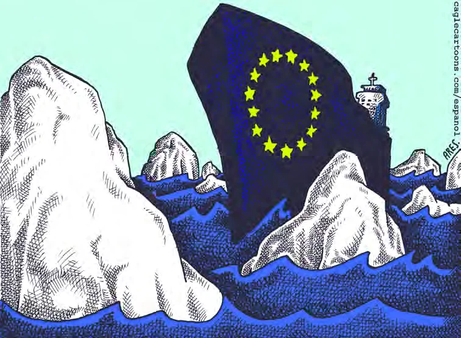
एनसीईआरटी पुस्तक का मूल व्यंग्यचित्र जो यह दिखाता है कि कैसे एक साझा यूरोपीय संविधान बनाने का प्रयास असफल रहा। जहाज पर विभिन्न सदस्य देशों के नाविक नीतियों को अलग-अलग दिशा में खींच रहे हैं, जो आपसी मतभेदों और ब्रेक्सिट की दरार (Brexit Gap) को दर्शाता है।
तमाम शक्तियों के बावजूद यूरोपीय संघ के समक्ष निम्नलिखित सीमाएं हैं:
- ब्रेक्सिट (Brexit): 2016 के जनमत संग्रह के बाद, 2020 में ब्रिटेन (UK) ने औपचारिक रूप से यूरोपीय संघ की सदस्यता छोड़ दी, जिससे इसकी साख और आर्थिक दायरे को भारी चोट पहुंची।
- राष्ट्रवाद बनाम संघवाद: कई मामलों में सदस्य देश अपनी संप्रभुता को यूरोपीय संघ के नियमों से ऊपर रखते हैं, जिससे साझी नीतियां बनाने में गतिरोध पैदा होता है।
- यूरो का विरोध: डेनमार्क और स्वीडन जैसे देशों ने मास्ट्रिच संधि के तहत साझी मुद्रा 'यूरो' को अपनाने से इनकार कर दिया।
4. भारत और यूरोपीय संघ (EU) संबंध
- रणनीतिक साझेदारी (Strategic Partnership): भारत और ईयू ने 2004 में रणनीतिक साझेदारी की शुरुआत की, जिसके तहत नियमित रूप से वार्षिक शिखर सम्मेलनों का आयोजन किया जाता है।
- व्यापार और निवेश: यूरोपीय संघ भारत का एक बहुत बड़ा व्यापारिक साझेदार है और भारत में होने वाले प्रत्यक्ष विदेशी निवेश (FDI) का एक बड़ा स्रोत है।
- तकनीक एवं अनुसंधान: दोनों देश विज्ञान, प्रौद्योगिकी, स्वच्छ ऊर्जा और अंतरिक्ष अनुसंधान (जैसे गैलीलियो उपग्रह प्रणाली) में सहयोग कर रहे हैं।
- वैश्विक सुरक्षा: समुद्री सुरक्षा और आतंकवाद विरोधी अभियानों में सूचनाओं का आदान-प्रदान और रक्षा समन्वय।
- जलवायु परिवर्तन: हरित ऊर्जा संक्रमण और अंतर्राष्ट्रीय सौर गठबंधन (ISA) में दोनों शक्तियों का मजबूत सहयोग।
- मुक्त व्यापार समझौते (FTA) पर गतिरोध: भारत और ईयू के बीच व्यापक व्यापार और निवेश समझौते (BTIA) पर 2007 से बातचीत चल रही है, लेकिन कृषि शुल्क, आईटी सेवाओं और बौद्धिक संपदा पर असहमति के कारण यह रुका हुआ है।
- गैर-टैरिफ बाधाएं (Non-tariff Barriers): भारत का आरोप है कि यूरोपीय संघ भारतीय कृषि और फार्मास्युटिकल उत्पादों पर कड़े सुरक्षा मानक लगाकर उनके निर्यात को रोकता है।
- कार्बन टैक्स (CBAM) विवाद: यूरोपीय संघ द्वारा आयातित स्टील और एल्यूमीनियम पर प्रस्तावित 'कार्बन सीमा समायोजन तंत्र' (Carbon Tax) को भारत एक संरक्षणवादी नीति मानता है।
- मानवाधिकारों पर आलोचना: यूरोपीय संसद द्वारा समय-समय पर भारत के आंतरिक मुद्दों (जैसे कश्मीर या नागरिकता कानून) पर प्रस्ताव पारित करना, जिसे भारत बाहरी हस्तक्षेप मानता है।
- वीजा और डेटा सुरक्षा नियम: भारत को ईयू द्वारा 'डेटा सुरक्षित राष्ट्र' का दर्जा न दिए जाने से आईटी क्षेत्र में बाधा आती है, साथ ही भारतीय पेशेवरों के लिए कड़े वीजा नियम टकराव का कारण हैं।
आसियन (ASEAN) - दक्षिण-पूर्व एशियाई देशों का संगठन
आसियान का भौगोलिक क्षेत्र दक्षिण-पूर्व एशिया में स्थित है। इसमें इंडोनेशिया, मलेशिया, फिलीपींस, सिंगापुर, थाईलैंड, ब्रुनेई, वियतनाम, लाओस, म्यांमार और कंबोडिया जैसे 10 देश शामिल हैं।
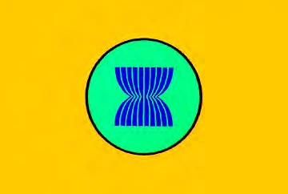
इस प्रतीक चिह्न में धान की दस बालियां दक्षिण-पूर्व एशिया के दस सदस्य देशों को दर्शाती हैं, जो आपस में मित्रता और एकता के धागे से बंधे हैं। बाहरी घेरा (Circle) आसियान की अखंडता और एकजुटता का प्रतीक है।
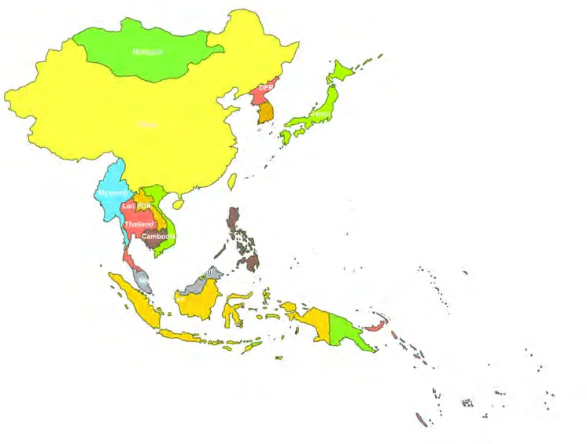
एनसीईआरटी पुस्तक का मूल मानचित्र जो आसियान के 10 सदस्य देशों की भौगोलिक स्थिति और उनके आर्थिक प्रभुत्व के क्षेत्र को स्पष्ट रूप से निरूपित करता है।
1. इतिहास और द्वितीय विश्वयुद्ध के बाद संगठन का जन्म
1.1 पृष्ठभूमि:
दक्षिण-पूर्व एशिया के देश द्वितीय विश्वयुद्ध से पहले और उसके दौरान यूरोपीय और जापानी साम्राज्यवाद के शिकार रहे। युद्ध के बाद वे निर्धनता, राष्ट्रीय पुनर्निर्माण और शीत युद्ध में महाशक्तियों के बीच खिंचे चले जाने के संकट से जूझ रहे थे। बांडुंग सम्मेलन और गुटनिरपेक्ष आंदोलन के माध्यम से एशिया-अफ्रीका के बीच सहयोग के प्रयास किए गए, लेकिन वे पर्याप्त नहीं थे। अंततः 1967 में पांच देशों (इंडोनेशिया, मलेशिया, फिलीपींस, सिंगापुर और थाईलैंड) ने बैंकॉक घोषणा-पत्र (Bangkok Declaration) पर हस्ताक्षर करके आसियन (ASEAN) की स्थापना की।
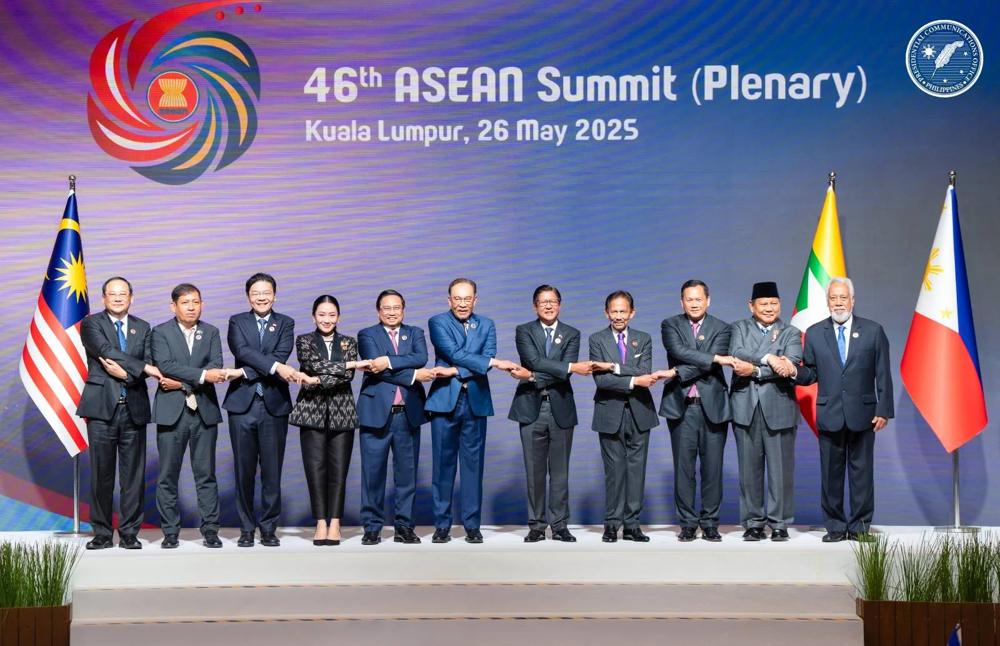
आसियान सदस्य देशों के राष्ट्राध्यक्षों की ऐतिहासिक समूह तस्वीर जो कूटनीतिक समन्वय और सर्वसम्मति को रेखांकित करती है।
2. 'आसियन शैली' (The ASEAN Way) और विकास के 3 स्तंभ
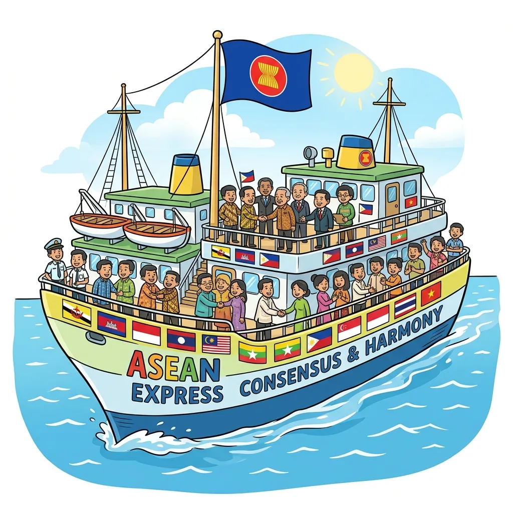
यह कार्टून आसियान देशों की आपसी सहमति, टकराव-मुक्त बातचीत और अनौपचारिक सहयोग (ASEAN Way) को एक बड़े शांत जहाज के रूप में निरूपित करता है, जो यूरोपीय संघ की जटिल संधियों से भिन्न है।
2.1 आसियान शैली (The ASEAN Way):
यह आसियान का एक अनूठा कूटनीतिक तरीका है जो अनौपचारिक, टकराव-रहित और सहयोगात्मक बातचीत पर आधारित है। इसमें सदस्य देशों की संप्रभुता का सम्मान किया जाता है और निर्णय सर्वसम्मति से लिए जाते हैं।
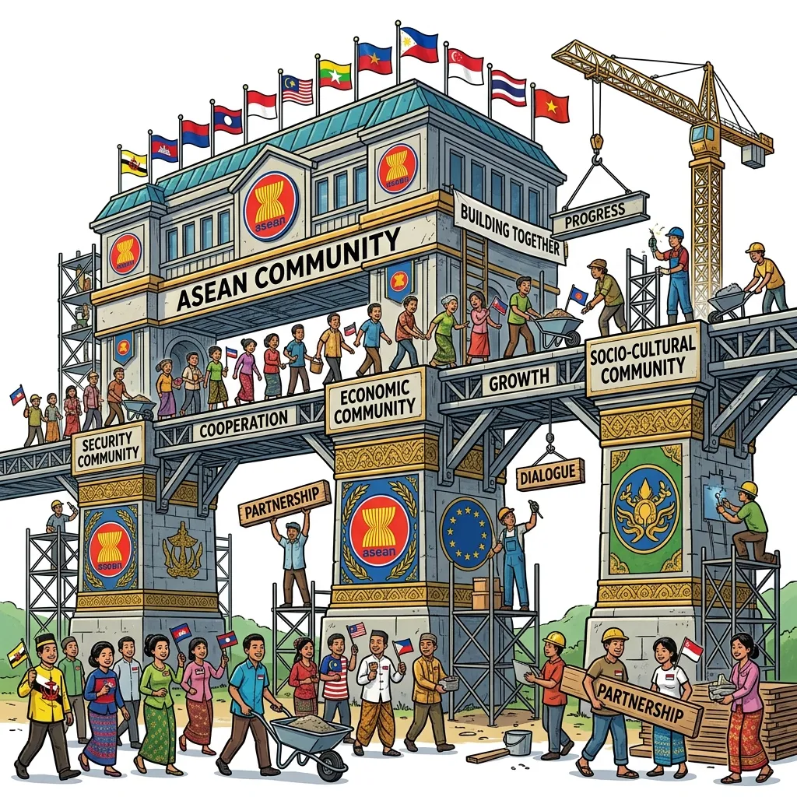
एनसीईआरटी पुस्तक का मूल कार्टून जो यह दिखाता है कि कैसे दक्षिण-पूर्व एशिया में आसियान के तीन समुदायों (सुरक्षा, आर्थिक, सामाजिक-सांस्कृतिक) के तहत देश शांतिपूर्वक प्रतिस्पर्धा और आर्थिक विकास को आगे बढ़ा रहे हैं।
2.2 आसियान समुदाय के 3 प्रमुख स्तंभ (Three Pillars):
2003 में आसियान ने तीन बुनियादी समुदायों का गठन किया जो इसके तीव्र विकास को दर्शाते हैं:
- आसियन सुरक्षा समुदाय (ASEAN Security Community): सदस्य देशों के बीच सीमा विवादों को युद्ध तक न जाने देना और आपसी बातचीत से सुरक्षा बनाए रखना।
- आसियन आर्थिक समुदाय (ASEAN Economic Community): पूरे क्षेत्र में साझा बाज़ार और मुक्त व्यापार व्यवस्था (FTA) का निर्माण करना।
- आसियन सामाजिक-सांस्कृतिक समुदाय (ASEAN Socio-Cultural Community): लोगों के बीच सांस्कृतिक संबंधों और शिक्षा को बढ़ावा देना।
3. भारत और आसियान (ASEAN) संबंध
- लुक ईस्ट से एक्ट ईस्ट नीति (Act East Policy): भारत ने 1992 में 'लुक ईस्ट' नीति अपनाई, जिसे 2014 में प्रधानमंत्री मोदी ने 'एक्ट ईस्ट' में बदला, जिससे दक्षिण-पूर्व एशिया हमारी कूटनीति का अहम हिस्सा बना।
- मुक्त व्यापार समझौता (FTA): भारत और आसियान ने वस्तुओं (2009) और सेवाओं/निवेश (2014) में मुक्त व्यापार समझौते पर हस्ताक्षर किए हैं।
- कनेक्टिविटी परियोजनाएं: भारत-म्यांमार-थाईलैंड त्रिपक्षीय राजमार्ग (Trilateral Highway) और कलादान मल्टी-मॉडल परियोजना के जरिए सड़क व समुद्री संपर्क।
- नौसैनिक अभ्यास और सुरक्षा: हिंद महासागर क्षेत्र में समुद्री डकैती को रोकने और नौपरिवहन की स्वतंत्रता (Freedom of Navigation) सुनिश्चित करने के लिए नियमित संयुक्त अभ्यास (जैसे SIMBEX)।
- सांस्कृतिक और बौद्ध संबंध: भारत आसियान देशों के साथ साझा बौद्ध विरासत और ऐतिहासिक सांस्कृतिक जुड़ाव को बढ़ावा देता है।
- बढ़ता व्यापार घाटा: मुक्त व्यापार समझौते के बाद भारत का आसियान देशों के साथ व्यापार घाटा बहुत बढ़ गया है, जिससे घरेलू उद्योगों पर नकारात्मक प्रभाव पड़ा है।
- RCEP समझौते से बाहर निकलना: भारत ने 2019 में चीनी सामानों की डंपिंग के डर से RCEP व्यापार संधि से बाहर निकलने का फैसला किया, जिससे कई आसियान देश निराश हुए।
- परियोजनाओं में अत्यधिक देरी: त्रिपक्षीय राजमार्ग जैसी बड़ी बुनियादी ढांचा परियोजनाओं के क्रियान्वयन में भारत की सुस्त गति सहयोग की राह में बड़ी बाधा है।
- चीन का भारी आर्थिक प्रभाव: आसियान के कई देश (जैसे कंबोडिया, लाओस) आर्थिक रूप से चीन पर पूरी तरह निर्भर हैं, इसलिए वे चीन के खिलाफ भारत के साथ आने में कतराते हैं।
- म्यांमार संकट पर नीतियां: म्यांमार के सैन्य तख्तापलट पर आसियान का रुख विभाजित है, जबकि भारत अपनी सीमा सुरक्षा के कारण व्यावहारिक संबंध बनाए रखता है, जिससे नीतिगत अंतर आता है।
चीन (China) का आर्थिक उत्थान और वैश्विक चुनौती
चीन पूर्वी एशिया में स्थित क्षेत्रफल और जनसंख्या के हिसाब से दुनिया का एक अत्यंत महत्वपूर्ण देश है। यह लद्दाख से लेकर प्रशांत महासागर तक सीमाएं साझा करता है।
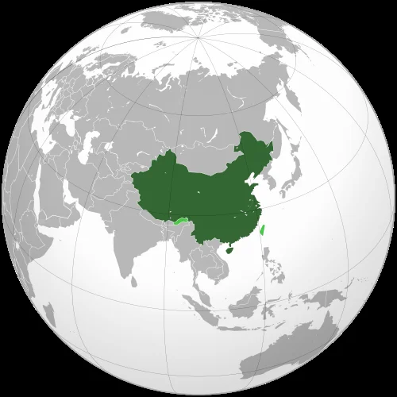
चीन का भौगोलिक स्थिति मानचित्र, जो पूर्वी एशिया में इसके विशाल भूभाग और पड़ोसी देशों के साथ इसकी सीमाओं को दर्शाता है।
1. चीन की पुरानी सोवियत समाजवादी प्रणाली (Mao era)
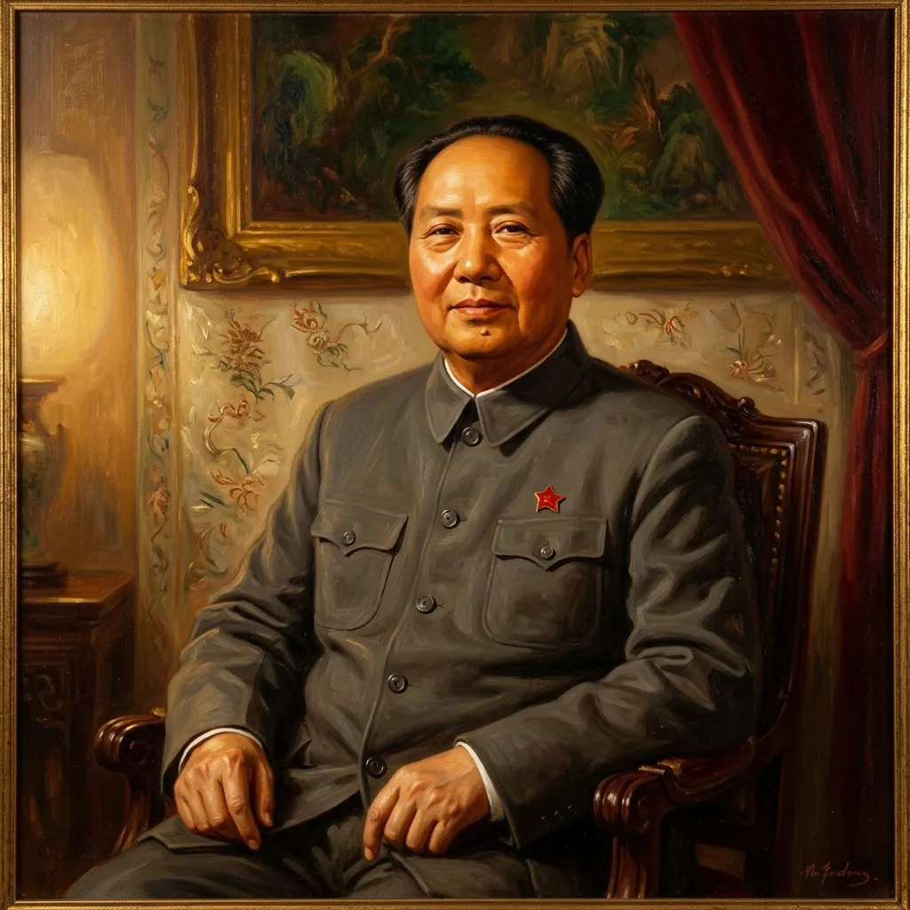
1949 की चीनी कम्युनिस्ट क्रांति के सर्वमान्य नेता और पीपल्स रिपब्लिक ऑफ...
1949 में माओ जेदांग के नेतृत्व में हुई समाजवादी क्रांति के बाद चीन ने सोवियत मॉडल पर आधारित एक बंद साम्यवादी अर्थव्यवस्था की स्थापना की। विदेशी व्यापार बहुत कम था और सारा नियंत्रण कम्युनिस्ट पार्टी का था। यद्यपि नागरिकों को बुनियादी सुविधाएं मिलीं, लेकिन आर्थिक विकास की दर जनसंख्या की वृद्धि दर (2-3%) से कम थी, जिससे भोजन की भारी कमी होने लगी।
2. 1978 के सुधार और 'खुले द्वार की नीति' (Deng Xiaoping era)
चीन के मुख्य आर्थिक सुधारक जिन्होंने 1978 में 'खुले द्वार की नीति' (Open Door Policy) की घोषणा की। इन्होंने चीन को एक बंद सोवियत अर्थव्यवस्था से निकालकर वैश्विक व्यापार और बाजार-आधारित आर्थिक महाशक्ति में बदल दिया।
चीन ने अपनी अर्थव्यवस्था को मजबूत करने के लिए 1970 के दशक में बड़े कूटनीतिक और आर्थिक बदलाव किए:
- 1972: अमेरिका के साथ राजनयिक और व्यापारिक संबंध बनाकर अपनी राजनीतिक अलग-थलग स्थिति (Isolation) समाप्त की।
- 1978: डेंग श्याओपिंग ने 'खुले द्वार की नीति' (Open Door Policy) की घोषणा की, जिसका उद्देश्य बाहरी दुनिया की तकनीक और निवेश को आकर्षित करना था।
- चरणबद्ध आर्थिक सुधार: सोवियत संघ की तरह एकाएक सब कुछ खोलने के बजाय, चीन ने 1982 में कृषि का निजीकरण किया और 1998 में उद्योगों का निजीकरण किया।
- विशेष आर्थिक क्षेत्र (SEZ): विदेशी पूंजी को आमंत्रित करने के लिए शेंजेन जैसे तटीय क्षेत्रों में एसईजेड की स्थापना की।
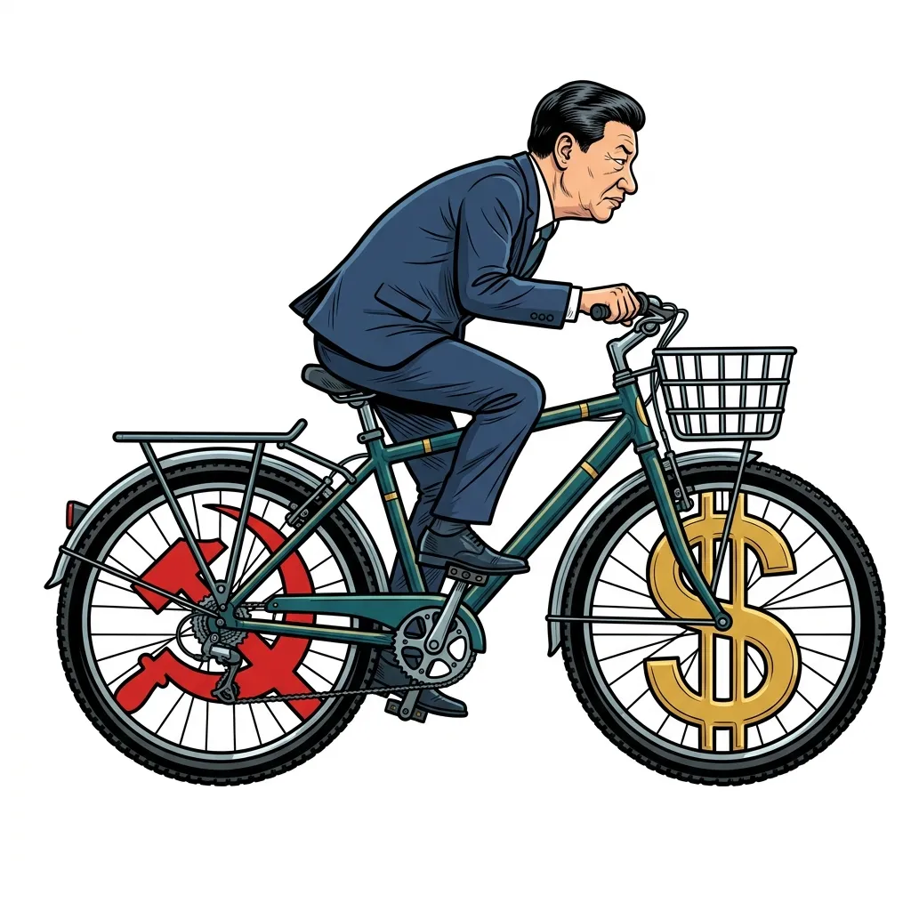
एनसीईआरटी का मूल कार्टून जो चीन के अनोखे हाइब्रिड मॉडल को साइकिल के दो पहियों के रूप में दर्शाता है। आगे के पहिये में कम्युनिस्ट पार्टी का लाल सितारा (राजनीतिक नियंत्रण) है और पिछले पहिये में पूंजीवादी डॉलर का निशान (आर्थिक स्वतंत्रता) है।
3. चीन के आर्थिक चमत्कार के परिणाम और उसकी सीमाएं
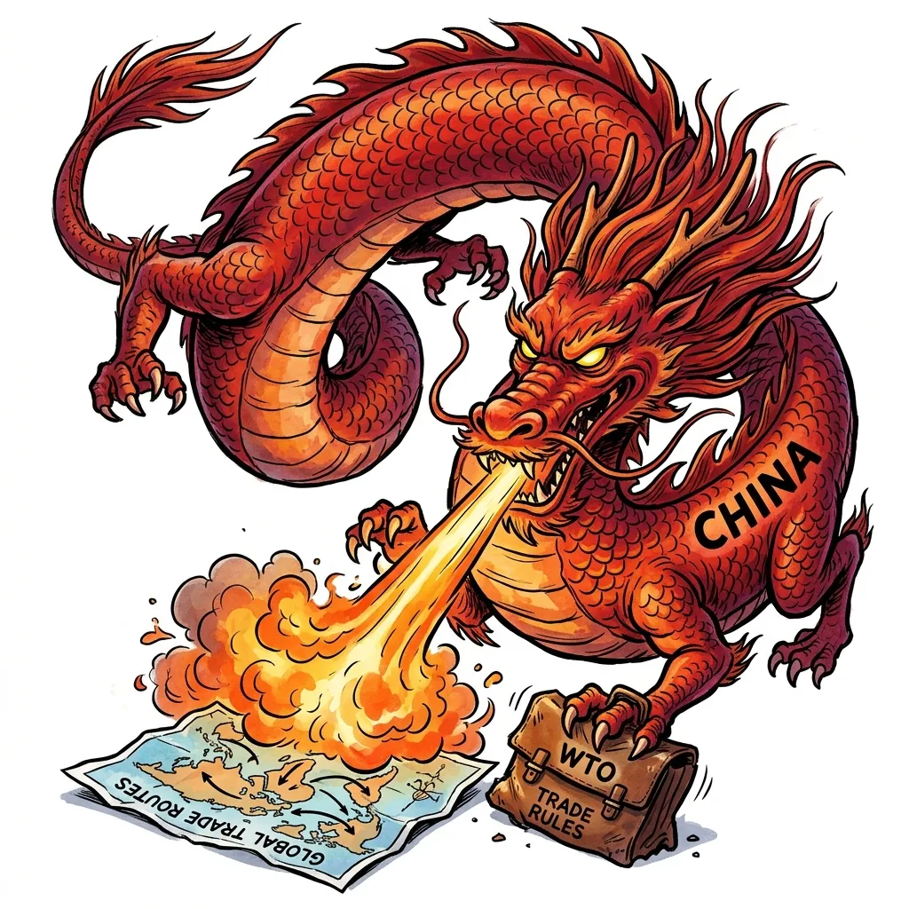
एनसीईआरटी का मूल चित्र जो यह दिखाता है कि कैसे चीन का विशाल व्यापारिक ड्रैगन अमेरिका के वर्चस्व को खुली चुनौती दे रहा है और पूरी दुनिया में चीनी सामानों की पैठ बढ़ गई है।
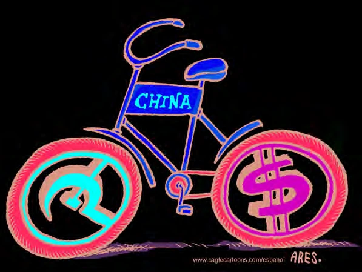
चीन का वह प्रसिद्ध तटीय शहर जो विशेष आर्थिक क्षेत्र के रूप में विकसित होकर चीनी विनिर्माण का प्रमुख वैश्विक केंद्र बन चुका है।
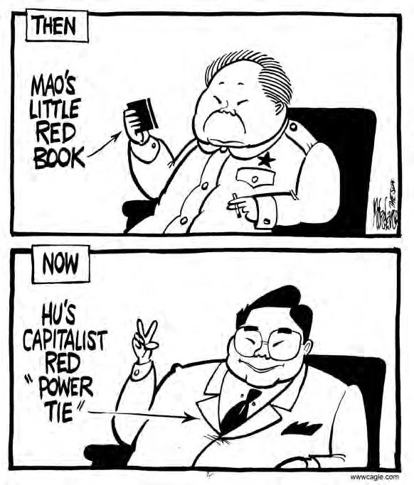
यह व्यंग्यचित्र चीन की महान दीवार और कम्युनिस्ट शासन में आए ऐतिहासिक बदलावों को दिखाता है कि कैसे पुराने समाजवादी सिद्धांतों से हटकर चीन ने विदेशी निवेश का मार्ग खोला।
3.1 आर्थिक उपलब्धियां: चीन विदेशी पूंजी निवेश का सबसे बड़ा गंतव्य है, जिसके पास दुनिया का सबसे बड़ा विदेशी मुद्रा भंडार है।
3.2 सीमाएं: चीन के इस तीव्र विकास ने आंतरिक चुनौतियां भी खड़ी की हैं: समाज में बढ़ती आर्थिक असमानता, औद्योगिक प्रदूषण और कम्युनिस्ट शासन में लोकतांत्रिक अधिकारों का अभाव।
भारत-चीन संबंध (India-China Relations) - कूटनीति, सहयोग और टकराव
भारत और चीन एशिया महाद्वीप की दो उभरती हुई विशाल अर्थव्यवस्थाएं और राजनीतिक शक्तियां हैं। दोनों पड़ोसी देशों का प्राचीन काल से सांस्कृतिक और व्यापारिक संबंध रहा है। 1947 में भारत की आजादी और 1949 in जनवादी चीन की स्थापना के बाद दोनों के संबंधों में उतार-चढ़ाव आए हैं।
1. ऐतिहासिक पृष्ठभूमि और 1962 का युद्ध

पश्चिमी सेक्टर (लद्दाख में अक्साई चिन) and पूर्वी सेक्टर (अरुणाचल प्रदेश में मैकमोहन रेखा) को दर्शाता हुआ सीमा विवाद का महत्वपूर्ण मानचित्र। 1962 के युद्ध का मुख्य कारण यही सीमा विवाद था।
1950 में तिब्बत पर चीन के कब्जे और 1959 में तिब्बती आध्यात्मिक गुरु दलाई लामा को भारत द्वारा शरण दिए जाने के कारण दोनों देशों के संबंधों में खटास आ गई। इन विवादों के कारण अक्टूबर 1962 में चीन ने भारत पर हमला किया और अक्साई चिन के हिस्से पर अधिकार कर लिया।
2. भारत और चीन के बीच सहयोग के 5 प्रमुख बिंदु (Cooperation)
- 1. द्विपक्षीय व्यापार (Bilateral Trade): चीन आज भारत के सबसे बड़े व्यापारिक साझेदारों में से एक है। दोनों देशों के बीच अरबों डॉलर का व्यापार होता है।
- 2. अंतरराष्ट्रीय मंचों पर समन्वय: वैश्विक स्तर पर जलवायु परिवर्तन वार्ताओं, WTO और संयुक्त राष्ट्र के आर्थिक सुधारों के मुद्दों पर भारत और चीन अक्सर विकासशील देशों के हित में एकजुट होकर बात रखते हैं।
- 3. सीमा प्रबंधन समझौते: दोनों देशों ने 1993, 1996 और 2005 में सीमा पर शांति और वास्तविक नियंत्रण रेखा (LAC) पर तनाव कम करने के लिए महत्वपूर्ण द्विपक्षीय समझौतों पर हस्ताक्षर किए हैं।
- 4. राजनयिक सुधार और यात्राएं: 1988 में राजीव गांधी की चीन यात्रा के बाद से दोनों देशों के राष्ट्राध्यक्षों के बीच नियमित द्विपक्षीय बैठकों का क्रम शुरू हुआ।
- 5. ब्रिक्स और सार्क मंच: दोनों देश ब्रिक्स (BRICS), शंघाई सहयोग संगठन (SCO) और जी-20 जैसे प्रमुख बहुपक्षीय मंचों पर साथ मिलकर वैश्विक आर्थिक स्थिरता के लिए कार्य कर रहे हैं।
3. भारत और चीन के बीच टकराव के 5 प्रमुख बिंदु (Conflict)
- 1. सीमा विवाद और हालिया झड़पें: वास्तविक नियंत्रण रेखा (LAC) पर डोकलाम (2017) और गलवान घाटी (2020) में हिंसक झड़पों के कारण दोनों देशों के सैन्य संबंध अत्यधिक तनावपूर्ण हो गए हैं।
- 2. चीन-पाकिस्तान आर्थिक गलियारा (CPEC): चीन द्वारा पाकिस्तान अधिकृत कश्मीर (POK) से होकर गुजारी जा रही बीआरआई (Belt and Road Initiative) सड़क का भारत अपनी क्षेत्रीय अखंडता के आधार पर कड़ा विरोध करता है।
- 3. पाकिस्तान को चीनी सैन्य सहयोग: चीन द्वारा पाकिस्तान को परमाणु तकनीक, मिसाइल और संयुक्त राष्ट्र में जैश-ए-मोहम्मद के आतंकियों पर वीटो लगाकर संरक्षण देना भारत की सुरक्षा के लिए बड़ी चिंता है।
- 4. 'मोतियों की माला' नीति (String of Pearls): हिंद महासागर में भारत को चारों तरफ से घेरने के लिए चीन द्वारा श्रीलंका (हंबनटोटा), मालदीव और म्यांमार में बंदरगाहों का विकास करना।
- 5. तिब्बत का मुद्दा और नदियों का विवाद: ब्रह्मपुत्र नदी पर चीन द्वारा बड़े बांधों का निर्माण करना, जिससे पूर्वोत्तर भारत में बाढ़ और पानी की कमी का संकट बढ़ सकता है।
जापान और दक्षिण कोरिया (Japan & South Korea) - वैकल्पिक केंद्र
जापान पूर्वी एशिया में प्रशांत महासागर में स्थित एक द्वीप देश है। दक्षिण कोरिया कोरियाई प्रायद्वीप के दक्षिणी भाग में स्थित है। दोनों देश रणनीतिक रूप से अत्यंत महत्वपूर्ण हैं।
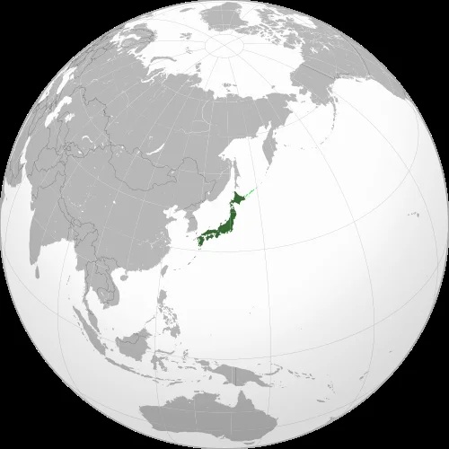
जापान का भौगोलिक स्थिति मानचित्र, जो प्रशांत महासागर में इसके द्वीपों की रणनीतिक अवस्थिति को निरूपित करता है।
1. जापान: सैन्य विनाश से तकनीकी चमत्कार तक (Japan)
1.1 संक्षिप्त इतिहास और द्वितीय विश्वयुद्ध के बाद उदय:
द्वितीय विश्वयुद्ध में हिरोशिमा और नागासाकी पर अमेरिकी परमाणु बम हमलों के कारण जापान पूरी तरह से नष्ट हो गया था। युद्ध के बाद, जापान ने संविधान के अनुच्छेद 9 (Article 9) को स्वीकार किया, जिसके तहत उसने युद्ध की घोषणा करने के अपने अधिकार को त्याग दिया और शांति का मार्ग चुना। अमेरिका के साथ सुरक्षा संधि के बाद, जापान ने अपनी पूरी ऊर्जा आर्थिक और तकनीकी विकास में लगा दी।
1.2 विकास और उपलब्धियां:
जापान आज दुनिया का सबसे उन्नत तकनीकी राष्ट्र है। जापानी ब्रांड जैसे Sony, Toyota, Honda, Panasonic, Suzuki पूरी दुनिया में गुणवत्ता के प्रतीक हैं। यह विकसित औद्योगिक देशों के समूह जी-7 (G-7) का एकमात्र एशियाई सदस्य है।
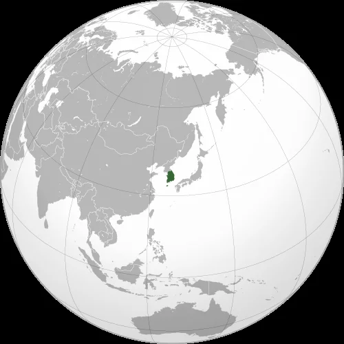
कोरियाई प्रायद्वीप पर दक्षिण कोरिया की भौगोलिक अवस्थिति का चित्र।
2. दक्षिण कोरिया: 'हान नदी का चमत्कार' और K-Wave
2.1 संक्षिप्त इतिहास और द्वितीय विश्वयुद्ध के बाद उदय:
1950-53 के विनाशकारी कोरियाई युद्ध के बाद दक्षिण कोरिया एक अत्यंत निर्धन और खंडहर बन चुका देश था। लेकिन, केवल 30 वर्षों में उसने असाधारण विकास दर हासिल की, जिसे 'हान नदी का चमत्कार' (Miracle on the Han River) कहा जाता है।
2.2 सॉफ्ट पावर और सांस्कृतिक लहर (K-Wave / Hallyu):
हाल के वर्षों में दक्षिण कोरिया ने अपनी 'सॉफ्ट पावर' का पूरी दुनिया में लोहा मनवाया है। युवाओं के बीच कोरियन पॉप संगीत (K-Pop जैसे BTS और Blackpink), कोरियन नाटक और फिल्में (K-Drama जैसे Squid Game, Crash Landing on You) और कोरियन सौंदर्य उत्पाद (K-Beauty) वैश्विक स्तर पर अभूतपूर्व रूप से लोकप्रिय हैं।
3. भारत और जापान संबंध
- बुलेट ट्रेन परियोजना: जापान भारत की पहली मुंबई-अहमदाबाद हाई-स्पीड रेल (Bullet Train) परियोजना का पूर्ण वित्तपोषण और तकनीकी मार्गदर्शन कर रहा है।
- क्वाड (Quad) गठबंधन: भारत और जापान हिंद-प्रशांत क्षेत्र में चीनी प्रभाव को संतुलित करने के लिए अमेरिका और ऑस्ट्रेलिया के साथ मिलकर 'क्वाड' के तहत काम कर रहे हैं।
- आधिकारिक विकास सहायता (ODA): जापान भारत में मेट्रो रेलवे परियोजनाओं (जैसे दिल्ली मेट्रो, मुंबई मेट्रो) और राष्ट्रीय राजमार्गों के विकास में सबसे बड़ा निवेशक है।
- सैन्य अभ्यास: दोनों देशों के बीच धर्म गार्जियन (सेना), जिमेक्स (नौसेना) और शिन्यू मैत्री (वायुसेना) जैसे नियमित सैन्य अभ्यास आयोजित होते हैं।
- औद्योगिक गलियारे: दिल्ली-मुंबई औद्योगिक गलियारा (DMIC) और चेन्नई-बेंगलुरु औद्योगिक गलियारे में जापानी सहयोग।
- कम द्विपक्षीय व्यापार: दोनों देशों के बीच CEPA संधि होने के बावजूद द्विपक्षीय व्यापार केवल 18-20 अरब डॉलर पर सिमटा हुआ है, जो चीन-भारत व्यापार की तुलना में बहुत कम है।
- रूस-यूक्रेन युद्ध पर मतभेद: जापान पश्चिमी देशों के साथ रूस पर कड़े प्रतिबंधों का पक्षधर है, जबकि भारत ने रूस से कच्चे तेल का आयात जारी रखा है और संयुक्त राष्ट्र में निष्पक्ष रुख अपनाया है।
- RCEP पर भिन्न मत: जापान चाहता था कि भारत RCEP समझौते में रहे ताकि चीनी प्रभाव को संतुलित किया जा सके, लेकिन भारत के हटने से जापान कूटनीतिक रूप से निराश हुआ।
- निवेशकों की प्रशासनिक शिकायतें: जापानी कंपनियों द्वारा भारत में भूमि अधिग्रहण, कर प्रणाली की जटिलताओं और प्रशासनिक फाइलों की देरी पर चिंता व्यक्त की जाती है।
- सैन्य संधियों की सीमा: जापान की शांतिवादी नीतियों (संविधान के अनुच्छेद 9) के कारण दोनों देशों के बीच प्रत्यक्ष युद्धक संधियों और हथियारों के सह-विकास में सीमाएं हैं।
4. भारत और दक्षिण कोरिया संबंध
- रक्षा विनिर्माण: दक्षिण कोरिया की मदद से भारतीय सेना के लिए 'के-9 वज्र' (K-9 Vajra) तोपों का भारत में ही सफल विनिर्माण किया जा रहा है।
- आर्थिक व्यापार: दोनों देशों ने 2009 में व्यापक आर्थिक भागीदारी समझौते (CEPA) पर हस्ताक्षर किए, जिससे व्यापारिक करों में कटौती हुई।
- निवेश और ब्रांड: हुंडई, सैमसंग और एलजी जैसी बड़ी दक्षिण कोरियाई कंपनियों ने भारत में भारी निवेश किया है और सैमसंग की नोएडा फैक्ट्री दुनिया की सबसे बड़ी मोबाइल विनिर्माण इकाई है।
- एक्ट ईस्ट नीति का जुड़ाव: दक्षिण कोरिया की 'न्यू सदर्न पॉलिसी' और भारत की 'एक्ट ईस्ट पॉलिसी' के बीच गहरा समन्वय।
- सॉफ्ट पावर और सांस्कृतिक जुड़ाव: कोरियन संगीत (K-Pop) और ड्रामा (K-Drama) की भारत के युवाओं में बढ़ती लोकप्रियता।
- व्यापार असंतुलन: भारत का दक्षिण कोरिया के साथ लगातार व्यापार घाटा बढ़ रहा है, जिसे कम करने के लिए भारत CEPA समझौते की समीक्षा की मांग कर रहा है।
- पोस्को (POSCO) विवाद: दक्षिण कोरियाई इस्पात कंपनी पोस्को का ओडिशा में प्रस्तावित 12 अरब डॉलर का प्रोजेक्ट भूमि अधिग्रहण और स्थानीय लोगों के कड़े विरोध के कारण रद्द करना पड़ा।
- गैर-टैरिफ व्यापार बाधाएं: भारतीय फार्मास्युटिकल और कृषि निर्यातकों को दक्षिण कोरियाई मानकों से कठिन नियामकीय चुनौतियों का सामना करना पड़ता है।
- चीन के प्रति रुख में अंतर: दक्षिण कोरिया आर्थिक और भौगोलिक रूप से चीन के प्रति आक्रामक रवैया अपनाने से बचता है, जबकि भारत चीन सीमा विवाद के प्रति अधिक सख्त है।
- प्रशासनिक बाधाएं: भारत में जटिल नौकरशाही और टैक्स सुधारों में देरी से दक्षिण कोरियाई निवेशक अक्सर असहज महसूस करते हैं।
क्षेत्रीय सहयोग संगठन - सार्क और ब्रिक्स (SAARC & BRICS)
सार्क मुख्य रूप से दक्षिण एशिया के देशों (भारत और उसके पड़ोसी) का संगठन है। ब्रिक्स एक अंतर-महाद्वीपीय ब्लॉक है, जिसमें ब्राजील (दक्षिण अमेरिका), रूस (यूरोप/एशिया), भारत (दक्षिण एशिया), चीन (पूर्वी एशिया) और दक्षिण अफ्रीका शामिल हैं।
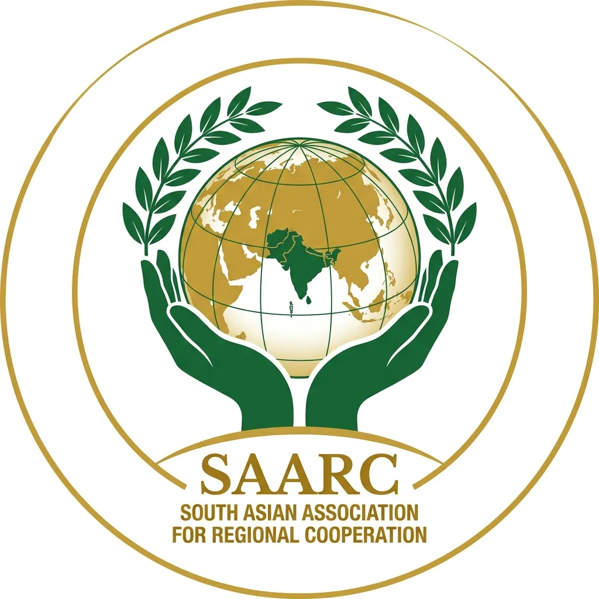
सार्क का लोगो दक्षिण एशिया के सदस्य देशों के बीच क्षेत्रीय सहयोग, शांति और परस्पर सहयोग की प्रतिबद्धता को दर्शाता है।
सार्क देशों के राष्ट्राध्यक्षों की ऐतिहासिक बैठक, जो उनके बीच क्षेत्रीय सहयोग और शांति व्यवस्था की स्थापना को निरूपित करती है।
1. सार्क (SAARC - दक्षिण एशियाई क्षेत्रीय सहयोग संगठन)
1.1 संक्षिप्त इतिहास और विकास:
सार्क की स्थापना 8 दिसंबर 1985 को ढाका में हुई थी। इसके सदस्य देश भारत, पाकिस्तान, बांग्लादेश, श्रीलंका, नेपाल, भूटान, मालदीव और अफगानिस्तान (2007 में शामिल) हैं। इसका मुख्य उद्देश्य आर्थिक विकास, सामाजिक प्रगति और क्षेत्रीय आत्मनिर्भरता को बढ़ावा देना था। सार्क देशों ने आपसी व्यापार बाधाओं को दूर करने के लिए SAFTA (साफ्टा - दक्षिण एशियाई मुक्त व्यापार क्षेत्र) समझौते पर 2004 में हस्ताक्षर किए।
1.2 सार्क की विफलता और सीमाएं:
भारत और पाकिस्तान के बीच लगातार बने रहने वाले सीमा विवादों, कश्मीर मुद्दे और आपसी अविश्वास के कारण सार्क एक निष्क्रिय संगठन बनकर रह गया है। इसके शिखर सम्मेलन नियमित रूप से आयोजित नहीं हो पा रहे हैं।
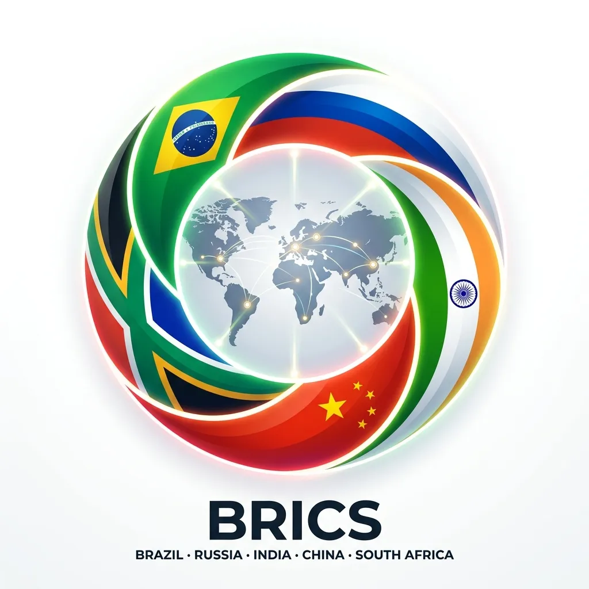
ब्रिक्स (ब्राजील, रूस, भारत, चीन, दक्षिण अफ्रीका) विश्व की प्रमुख उभरती हुई अर्थव्यवस्थाओं का समूह है। यह वैश्विक राजनीतिक और आर्थिक व्यवस्था को और अधिक समावेशी बनाने का प्रयास करता है।
ब्रिक्स देशों के राष्ट्राध्यक्षों की ऐतिहासिक तस्वीर, जो वैश्विक आर्थिक व राजनीतिक मोर्चे पर विकासशील शक्तियों की एकता को दर्शाती है।
2. ब्रिक्स (BRICS - उभरती आर्थिक महाशक्तियों का ब्लॉक)
2.1 इतिहास और उद्देश्य:
2006 में 'ब्रिक' (BRIC) के रूप में इसकी शुरुआत हुई और 2010 में दक्षिण अफ्रीका के शामिल होने के बाद यह 'ब्रिक्स' (BRICS) बन गया। इसका मुख्य उद्देश्य सदस्य देशों के बीच आर्थिक सहयोग, व्यापार और निवेश को बढ़ावा देना है।
2.2 विकास और महत्वपूर्ण उपलब्धियां (New Development Bank):
ब्रिक्स देशों ने शंघाई में न्यू डेवलपमेंट बैंक (NDB) की स्थापना की, जो आईएमएफ और विश्व बैंक जैसी पश्चिमी संस्थाओं पर निर्भरता को कम करता है। ब्रिक्स देश आज वैश्विक जनसंख्या का 40% और वैश्विक अर्थव्यवस्था का लगभग 30% हिस्सा संभालते हैं, जिससे वे अमेरिका के एकतरफा दबदबे को संतुलित करने का बड़ा माध्यम हैं।
3. भारत और सार्क (SAARC) संबंध
- मुक्त व्यापार क्षेत्र (SAFTA): भारत ने दक्षिण एशिया में सीमा शुल्क और व्यापार बाधाओं को दूर करने के लिए साफ्टा को पूर्ण सहयोग दिया।
- मानवीय और चिकित्सा सहायता: भारत पड़ोसी देशों (जैसे नेपाल भूकंप 2015, मालदीव जल संकट) में आपदा के समय सबसे पहले मदद पहुंचाने वाला 'फर्स्ट रेस्पॉन्डर' रहा है।
- दक्षिण एशिया उपग्रह (South Asia Satellite): 2017 में भारत ने सार्क देशों की मदद के लिए एक समर्पित संचार उपग्रह लॉन्च किया, जो आपदा प्रबंधन और टेलीमेडिसिन में सहायक है।
- शैक्षणिक एवं सांस्कृतिक सहयोग: नई दिल्ली में दक्षिण एशियाई विश्वविद्यालय (SAU) की स्थापना की गई, जहाँ सभी सार्क देशों के छात्र पढ़ते हैं।
- सार्क कोविड-19 इमरजेंसी फंड: 2020 में भारत की पहल पर वैश्विक महामारी से लड़ने के लिए 10 मिलियन डॉलर की सहायता राशि के साथ फंड की शुरुआत।
- आतंकवाद और पाकिस्तान का रुख: पाकिस्तान द्वारा भारत-विरोधी आतंकवादी गतिविधियों को बढ़ावा देने के कारण भारत ने "आतंक और बातचीत साथ-साथ नहीं चल सकते" नीति के तहत सार्क सम्मेलनों में भाग लेना बंद कर दिया है।
- संगठन का पक्षाघात (Paralysis of SAARC): 2016 के इस्लामाबाद शिखर सम्मेलन के रद्द होने के बाद से कोई भी सार्क शिखर सम्मेलन आयोजित नहीं हो पाया है।
- कनेक्टिविटी समझौतों पर अवरोध: पाकिस्तान द्वारा सार्क मोटर वाहन समझौते और रेलवे संपर्क प्रस्तावों को बार-बार ब्लॉक करना।
- BIMSTEC की ओर झुकाव: सार्क के ठप होने से भारत अब बिम्सटेक (BIMSTEC) जैसे संगठनों को अधिक प्राथमिकता दे रहा है, जिसमें पाकिस्तान शामिल नहीं है।
- बड़े भाई का डर (Hegemony Fear): आकार और आर्थिक क्षमता में भारत के विशाल होने के कारण छोटे पड़ोसियों में एक अघोषित 'अविश्वास' की स्थिति बनी रहती है।
4. भारत और ब्रिक्स (BRICS) संबंध
- न्यू डेवलपमेंट बैंक (NDB): भारत बैंक का संस्थापक सदस्य है और देश में बुनियादी ढांचा परियोजनाओं के विकास के लिए बड़े पैमाने पर ऋण प्राप्त कर चुका है।
- कंटिंजेंट रिजर्व अरेंजमेंट (CRA): भुगतान संतुलन के संकट के समय सदस्य देशों की वित्तीय सुरक्षा सुनिश्चित करने वाली मौद्रिक व्यवस्था।
- ग्लोबल साउथ का नेतृत्व: ब्रिक्स भारत को विकासशील देशों की आवाज अंतर्राष्ट्रीय मंचों पर उठाने का एक सशक्त मंच देता है।
- आतंकवाद विरोधी रणनीति: ब्रिक्स ने भारत के प्रयासों से आतंकवाद के वित्तपोषण को रोकने और आतंकवाद विरोधी कार्य योजना को अपनाया है।
- कृषि और अंतरिक्ष सहयोग: कृषि अनुसंधान मंचों का विकास और रिमोट सेंसिंग उपग्रहों का साझा समूह।
- चीन-भारत सीमा तनाव: लद्दाख सीमा विवाद (गलवान झड़प) के कारण ब्रिक्स के दो सबसे बड़े सदस्यों के बीच द्विपक्षीय संबंध अत्यंत खराब हुए हैं, जिससे ब्रिक्स की एकता प्रभावित होती है।
- चीन का वर्चस्ववादी रवैया: भारत आशंकित रहता है कि चीन ब्रिक्स को अमेरिकी/पश्चिमी विरोधी ब्लॉक बनाकर अपनी मुद्रा (Yuan) को वैश्विक मुद्रा के रूप में स्थापित करने के लिए इस्तेमाल न करे।
- सदस्यता विस्तार पर असहमति: चीन तेजी से ईरान, मिस्र जैसे देशों को शामिल कर ब्रिक्स को एक चीनी-समर्थित गुट बनाना चाहता था, जबकि भारत कड़े मानकों के साथ विस्तार का पक्षधर था।
- रूस-चीन का बढ़ता गठबंधन: यूक्रेन युद्ध के बाद रूस की चीन पर बढ़ती आर्थिक निर्भरता ने भारत के लिए ब्रिक्स के अंदर संतुलन बनाना कठिन कर दिया है।
- साझा व्यापारिक असंतुलन: भारत का ब्रिक्स के अन्य देशों (विशेष रूप से चीन) के साथ भारी व्यापार घाटा है, जो आर्थिक हितों में टकराव पैदा करता है।
अध्याय 2: मेगा प्रश्न बैंक (50+ Q&A)
महत्वपूर्ण बहुविकल्पीय प्रश्न (MCQs)
Q1. यूरोपीय संघ (EU) की स्थापना किस संधि द्वारा हुई?
उत्तर: मास्ट्रिच संधि (Maastricht Treaty), 1992।
Q2. आसियान (ASEAN) की स्थापना कब हुई?
उत्तर: 1967 में बैंकॉक घोषणा (Bangkok Declaration) के माध्यम से।
Q3. 'खुले द्वार की नीति' (Open Door Policy) किस देश ने अपनाई?
उत्तर: चीन (1978 में डेंग शियाओपिंग द्वारा)।
Q4. सार्क (SAARC) का मुख्यालय कहाँ स्थित है?
उत्तर: काठमांडू (नेपाल)।
Q5. 'ब्रिक्स' (BRICS) में शामिल होने वाला अंतिम देश कौन सा था?
उत्तर: दक्षिण अफ्रीका (2010 में)।
लघु उत्तरीय प्रश्न (Short Answer Questions)
Q6. 'आसियान शैली' (ASEAN Way) से आप क्या समझते हैं?
उत्तर: आसियान के सदस्य देशों के बीच अनौपचारिक, टकराव-रहित और सहयोगात्मक बातचीत करने के तरीके को 'आसियान शैली' कहा जाता है। इसमें देश एक-दूसरे की संप्रभुता का सम्मान करते हैं।
Q7. यूरोपीय संघ को एक 'अति-राष्ट्रीय संगठन' (Super National Organisation) क्यों कहा जाता है?
उत्तर: क्योंकि इसके पास अपनी साझी मुद्रा (Euro), एक साझा ध्वज, स्थापना दिवस, और साझी विदेश व सुरक्षा नीति है। यह एक देश की तरह व्यवहार करने की दिशा में बढ़ रहा है।
Q8. चीन ने अपनी अर्थव्यवस्था को सुधारने के लिए कौन से दो चरणों को अपनाया?
उत्तर: 1. 1982 में खेती का निजीकरण (Privatisation of Agriculture), 2. 1998 में उद्योगों का निजीकरण (Privatisation of Industries)।
Q9. भारत और चीन के बीच विवाद के मुख्य मुद्दे क्या हैं?
उत्तर: 1. सीमा विवाद (जैसे गलवान घाटी और अरुणाचल प्रदेश), 2. तिब्बत और दलाई लामा का मुद्दा, 3. पाकिस्तान के साथ चीन की नजदीकी।
दीर्घ उत्तरीय प्रश्न (Long Answer Questions - 6 Marks)
Q10. यूरोपीय संघ के आर्थिक, राजनैतिक और सैन्य प्रभाव की विस्तार से चर्चा करें।
उत्तर:
1. आर्थिक प्रभाव: यूरो डॉलर के लिए खतरा है और इसका विश्व व्यापार में अमेरिका से ज्यादा हिस्सा है।
2. राजनैतिक प्रभाव: फ्रांस सुरक्षा परिषद का स्थायी सदस्य है।
3. सैन्य प्रभाव: संयुक्त रूप से इसकी सेना अमेरिका के बाद दूसरी सबसे बड़ी है। फ्रांस के पास परमाणु हथियार भी हैं।
Q11. आसियान के तीन स्तंभों की व्याख्या करें और उनके उद्देश्यों को स्पष्ट करें।
उत्तर:
1. सुरक्षा समुदाय: क्षेत्रीय शांति और विवादों को युद्ध तक न पहुँचने देना।
2. आर्थिक समुदाय: साझा बाज़ार और उत्पादन आधार तैयार करना।
3. सामाजिक-सांस्कृतिक समुदाय: सामाजिक विकास और संस्कृति को बढ़ावा देना।
अगले भाग में हम बोर्ड परीक्षा विशेष (Previous Year Questions) और नक्शों (Maps) को देखेंगे।
अध्याय 2: बोर्ड परीक्षा विशेष (Board Exam Special)
1. मानचित्र कार्य (Map Work) - अत्यंत महत्वपूर्ण
बोर्ड परीक्षा में इस अध्याय से अक्सर नक्शे पर आधारित प्रश्न पूछे जाते हैं। आपको निम्नलिखित देशों की पहचान करनी आनी चाहिए:
- यूरोपीय संघ का वह देश जो सुरक्षा परिषद का स्थायी सदस्य है: फ्रांस
- आसियान के संस्थापक देश: इंडोनेशिया, मलेशिया, फिलीपिंस, सिंगापुर, थाईलैंड।
- वह देश जो द्वितीय विश्वयुद्ध के बाद 'हान नदी के चमत्कार' के लिए जाना गया: दक्षिण कोरिया
- सार्क का वह सदस्य देश जिसने 2007 में इस संगठन में प्रवेश किया: अफगानिस्तान
2. पिछले 10 वर्षों के बोर्ड प्रश्न (Previous Year Questions)
इन प्रश्नों को हल करना आपकी बोर्ड परीक्षा की तैयारी को 100% सटीक बनाएगा:
- Q1. 'ब्रिक्स' के उद्देश्यों की चर्चा करें और भारत के लिए इसका क्या महत्व है? (6 अंक)
- Q2. यूरोपीय संघ की साझी आर्थिक और राजनैतिक विशेषताओं का वर्णन करें। (4 अंक)
- Q3. 'आसियान शैली' क्या है? इसे दक्षिण-पूर्व एशिया में शांति का मार्ग क्यों माना जाता है? (2 अंक)
- Q4. चीन की 'सुधारों' की नीति का वहां के समाज और दुनिया पर क्या प्रभाव पड़ा? (6 अंक)
- Q5. जापान अपनी सैन्य आवश्यकताओं के लिए किस पर निर्भर है और इसकी अर्थव्यवस्था इतनी मजबूत क्यों है? (4 अंक)
- Q6. सार्क (SAARC) की विफलता के मुख्य कारणों को बताएं। क्या यह संगठन आज भी प्रासंगिक है? (6 अंक)
- Q7. भारत और चीन के बीच संबंधों में सुधार के लिए राजीव गांधी ने क्या कदम उठाए थे? (4 अंक)
- Q8. दक्षिण कोरिया और जापान के बीच संबंधों को 'आर्थिक सहयोग' के संदर्भ में समझाएं। (2 अंक)
3. मास्टर गुरुमन्त्र (Final Tips)
- यूरोपीय संघ: हमेशा 1992 और मास्ट्रिच संधि को याद रखें।
- आसियान: विजन 2020 और 'आसियान शैली' सबसे ज्यादा पूछे जाने वाले सवाल हैं।
- चीन: डेंग शियाओपिंग और 1978 की 'ओपन डोर पॉलिसी' (Open Door Policy) पर विशेष ध्यान दें।
- ब्रिक्स: नया विकास बैंक (NDB) और पाँचों देशों के नामों का संक्षिप्त रूप याद रखें।
चैप्टर 2 का मास्टर कोर्स संपन्न। अब आप बोर्ड परीक्षा के लिए 100% तैयार हैं!